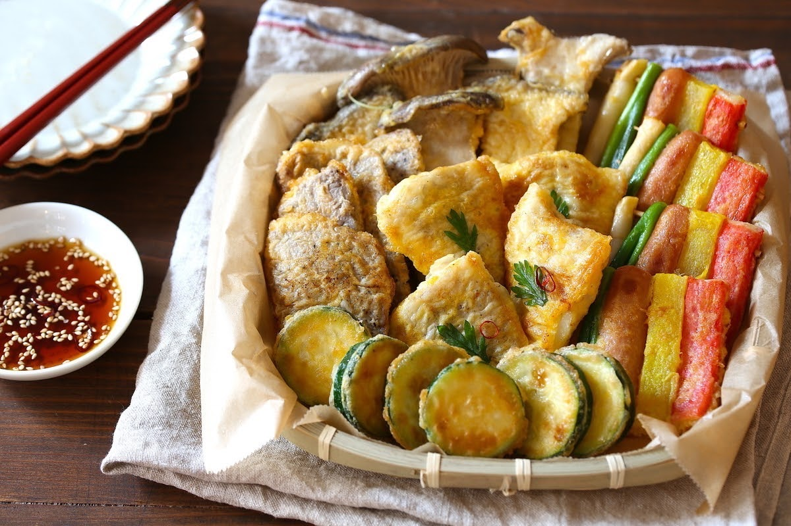

Sol-Ral
The first day of the first month of the lunar calendar is called Sol-Ral.
The first day of the first month of the lunar calendar is called Sol-Ral (설날).
It is one of the two most celebrated festivals in Korea, along with Chuseok and 추석.
The date changes every year, but it is usually from the end of January to the middle of February.
Tea ceremonies are held on the occasion of Sorral and Autumn Festival. During the ceremony, special offerings are made to the gods. After the tea ceremony, people go to visit the graves of their ancestors.
We greet each other's relatives and neighbors with a greeting called toshihai seiyuu.
We bow in order to the elderly and superiors, and exchange prayers, congratulations, and 德談덕담.
🔑 새해 복 받으세요.
Please take lots of blessings in the New Year.
→Happy New Year!
 With the arrival of the New Year, people dress themselves in new clothes, shoes, socks, etc., as a sign of a fresh start. These clothes are called "Seolbim," and children wear colorful Hanbok as their new clothes. The color of the hanbok is meant to ward off bad luck and longevity.
The most common traditional foods eaten at Sorral are 떡국, a soup made with rice cakes and vegetables, and 전, small pieces of grilled vegetables and meat, similar to tempura in Japan.
New Year's games are also an essential part of the festival. Not only children but also adults enjoy these games together. Among the many folk games, kite flying and spinning are the most popular.
With the arrival of the New Year, people dress themselves in new clothes, shoes, socks, etc., as a sign of a fresh start. These clothes are called "Seolbim," and children wear colorful Hanbok as their new clothes. The color of the hanbok is meant to ward off bad luck and longevity.
The most common traditional foods eaten at Sorral are 떡국, a soup made with rice cakes and vegetables, and 전, small pieces of grilled vegetables and meat, similar to tempura in Japan.
New Year's games are also an essential part of the festival. Not only children but also adults enjoy these games together. Among the many folk games, kite flying and spinning are the most popular.
Chuseok
Chuseok, also known as Hangawi, is one of the most famous festivals in Korea along with Sol-Ral.
Every year, on the day of Chuseok (the 15th day of the 8th lunar month) and one day before and after Chuseok, relatives gather in their hometowns to visit the graves of their ancestors and give thanks for the autumn harvest. It is said that the custom of the autumn evening began in the Silla Dynasty.
After the tea ceremony and breakfast, the whole family goes to visit the graves. At the cemetery, all the relatives line up around the graves of their ancestors and bow to each other.
Many people go back to their homes or spend time with their families at home, so downtown areas are less crowded and many stores are closed.
On the day before Fall Festival, some families make Songpyeon송편편.It is a typical food for Autumn Festival, made by kneading wheat rice flour with water, wrapping it with red beans, chestnuts, ground sesame seeds and sugar, and placing it in a steamer covered with pine needles.
It is said that if you can make a beautiful shape, you will be blessed with a good marriage partner, and if you are pregnant, you will have a beautiful baby.
.